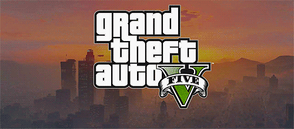

Об игре
Grand Theft Auto V (сокр. GTA V) — мультиплатформенная компьютерная игра в жанре action-adventure с открытым миром, разработанная компанией Rockstar North и изданная компанией Rockstar Games. Изначально игра была выпущена для игровых консолей PlayStation 3 и Xbox 360 в 2013 году, в 2014 году переиздана для PlayStation 4 и Xbox One, а в 2015 году — для персональных компьютеров под управлением Windows. Является пятнадцатой по счёту игрой серии Grand Theft Auto и следующей крупной игрой после Grand Theft Auto IV, выпущенной в 2008 году. В России и СНГ издателем Grand Theft Auto V выступает компания 1С-СофтКлаб.
